Harvest festival fills the food bank
Every class brought something from the garden or the shop for local families.
Select a date to read what changed.
A retired sea captain taught twelve fishermen's children reading, counting and knots.
Parents asked for a place for their four-year-olds, so a sunny room with a sand tray opened.
A nursery for the youngest children opened beside the school garden.
Weekly woodland sessions became part of the timetable for every class.
Bright classrooms, a library tree house and a sensory garden were added.
Four ideas shape every lesson, from the youngest room to Year 6.
Young children learn best when they are busy and curious. Play is how they practise language, number and friendship.
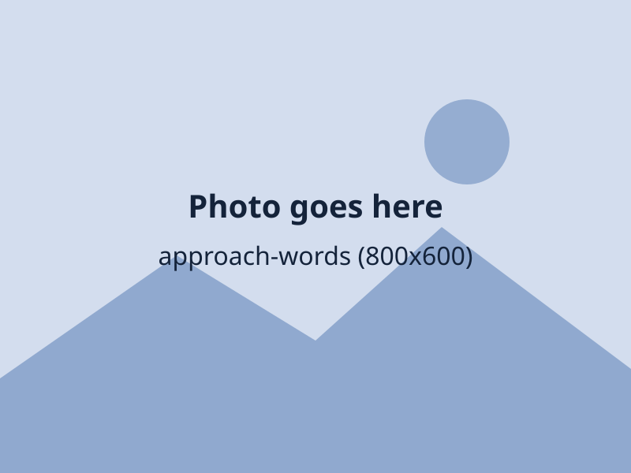
Stories, songs and talk come before pencils. Strong speaking and listening make reading and writing easier.
Outdoor lessons build confidence, fitness and an eye for detail.
Children learn the words for how they feel and how to look after others.
In Kindergarten every child has a key person. In primary, a class teacher and a teaching assistant work together all year. Choose an age group to see how it works.
Pick an age group to see who your child's main adult will be.
The adults who lead the school day to day.
Head of the School
Taught in primary schools for 22 years before joining Gardenia. Reads a story to a different class every Friday.
Deputy Head, Learning
Looks after the curriculum, teaching quality and how we share progress with parents.
Head of Kindergarten
Leads Garden Cottage and everything for children aged 2 to 5.
Head of Primary
Leads Years 1 to 6, pupil voice and the prefect team.
Designated Safeguarding Lead
Leads wellbeing and child protection across both sites.
Head of Learning Support
Leads support for children who need extra help or extra challenge.
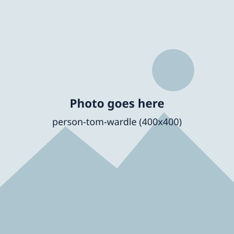
Forest School Lead
Runs the woodland classroom, the small farm and sea-safety lessons.
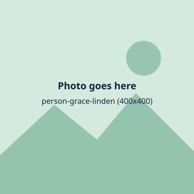
School Business Manager
Looks after finance, premises, catering and school transport.
Admissions Registrar
The first friendly voice most families hear.
Head of Clubs and Wraparound Care
Plans breakfast club, after-school club and the clubs timetable.
Every class has a teacher and a teaching assistant. Specialists teach languages, music, art, PE and computing.
Ducklings lead key person, ages 2 to 3
Sings the tidy-up song so well that parents ask for a recording.
Otters class teacher, Pre-K
Runs the mud kitchen café every Thursday.
Kingfishers class teacher, Reception
Turns phonics into treasure hunts.
Year 1 class teacher
Looks after a class snail called Gary.
Year 2 class teacher
Teaches maths with a shop in the corner of the classroom.
Year 3 class teacher
Writing coach and keeper of the story tree.
Year 4 class teacher
History detective with a box of mystery objects.
Year 5 class teacher, science lead
Organiser of the yearly egg-drop challenge.
Year 6 class teacher, prefect mentor
Leads the residential week and the leavers' play.
Spanish and French
Teaches through songs, games and a lot of laughing.
Music
Conducts both choirs and the ukulele orchestra.
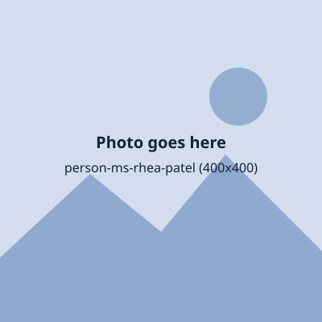
Art and design
Runs the open studio at lunchtime.
PE and swimming
Taught half the school to swim.
Computing and wellbeing
Teaches safe, kind and curious use of technology.
No teacher matches that search. Clear it or choose All.
Our teaching assistants, key people, kitchen team and caretakers also help every day. Thank you to all of them.
Year 6 pupils who lead by example. Pupils are shown by first name only.
Head Pupil, Year 6
I want every new child to feel welcome on their first day.
Head Pupil, Year 6
I am looking forward to running the school assembly.
Deputy Head Pupil, Year 6
Deputy Head Pupil, Year 6
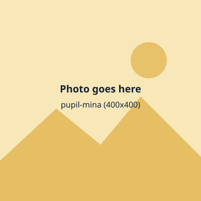
Library prefect, Year 6
Eco prefect, Year 6
Sports captain, Year 6
Music prefect, Year 6
Reading buddies lead, Year 6
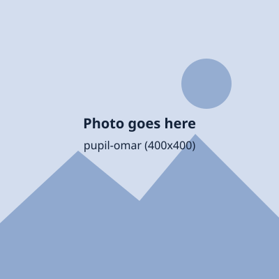
School council chair, Year 6
Playground friends lead, Year 6
Garden prefect, Year 6
Every class chooses a class leader and a deputy each half term, and gives jobs to everyone in turn.
Every pupil gets a chance to lead, and everyone gets a vote.
Children think about what they could offer their class or school.
Pupils put themselves or a friend forward.
Candidates give a one-minute talk to the class or assembly.
Everyone votes in a real polling booth with a paper ballot.
New leaders receive their badges in front of families.
We are always glad to hear from teachers, teaching assistants and key people. Send us a message and tell us about yourself.
Garden Cottage is home to ages 2 to 5. The Primary site holds Years 1 to 6, the hall, the library tree house and the small farm. Children from both visit each other for reading buddies and festivals.
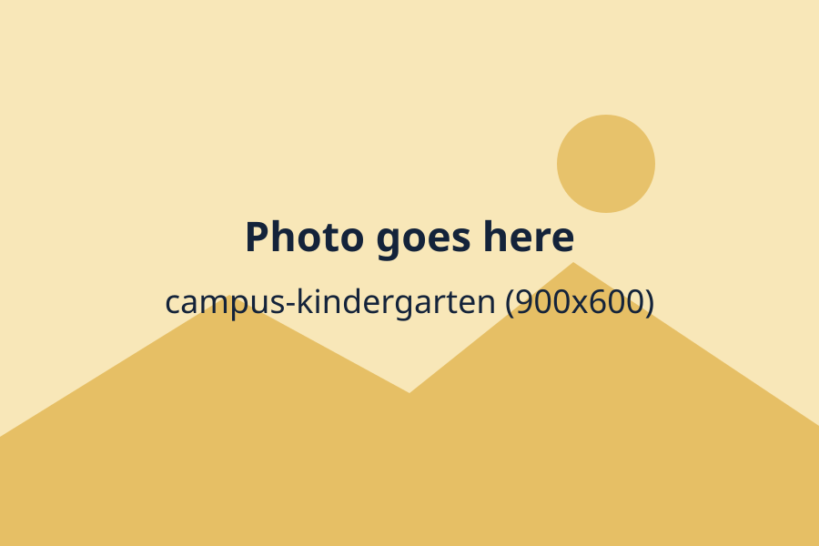
Ages 2 to 5. Sand and water play, a mud kitchen and a quiet reading nook.
Ages 5 to 11. Classrooms, music room, sports hall, pool and farm.
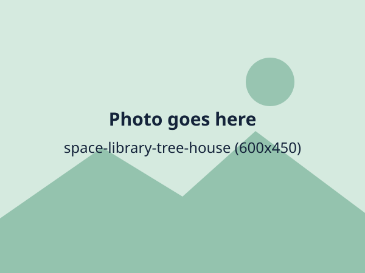
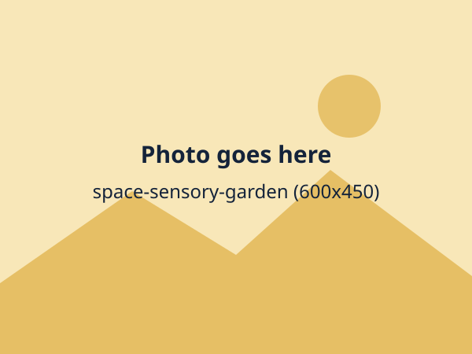
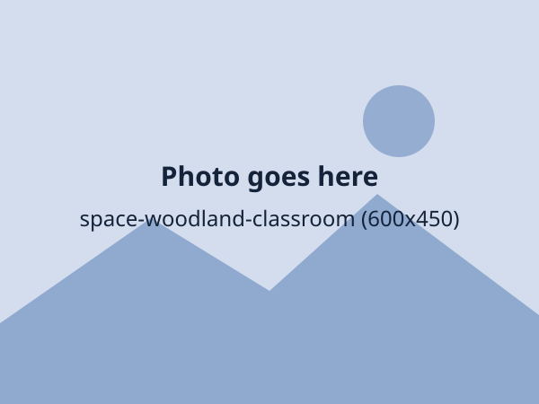
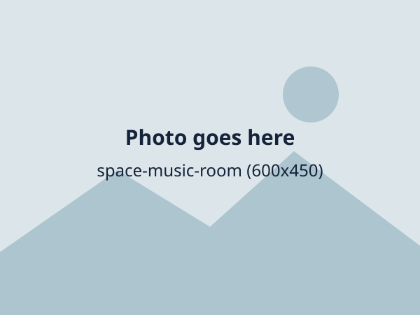
Nothing matters more than children being safe, happy and looked after.
Our children give time and ideas to the people around them.

Year 6 pupils read with Kindergarten children each week.
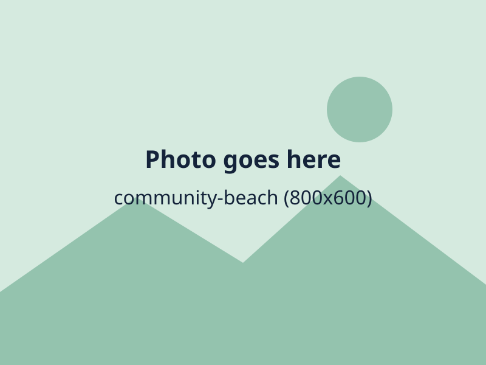
Every class helps look after the shoreline twice a year.
Our parents' association runs the summer fair, book sale and second-hand uniform shop.
What our children, teachers and families have been up to.
Every class brought something from the garden or the shop for local families.
Pallets, bamboo and pinecones made a home for woodland visitors.
Kayaking, camp cooking and a very muddy tug of war.
Sand relays, egg-and-spoon races and a very proud finish line.
Our youngest children sang to a packed room of families.
Herbs, wind chimes and a willow tunnel for quiet play.
A funny, moving show about a school boat that sails away.
Cake stalls, bouncy castles and a record number of raffle prizes.
Year 6 completed their swimming badges and cheered each other on.
No stories match. Clear the search or choose All.
This term children have planted bulbs, built dens and learned to tie a bowline. The best days are the muddy ones, when someone tells me what they discovered and why it matters.
Anna Holloway, Head
Meet the teachers and walk the woodland.
Crafts, carols and hot chocolate in the hall.
Kindergarten and Years 1 to 2 perform for families.
Stories, songs and a look around Garden Cottage.
Children can join Garden Cottage from age 2. Primary entry is in the September after a child turns 5, with places in other years if available.
No. We welcome families of all beliefs and none, and we celebrate festivals from many cultures.
Yes. Our uniform is simple, comfortable and practical for muddy play. Waterproofs and wellies are part of it.
Through a weekly email, a secure photo app for the youngest children and termly reports with parent meetings.
One email each term with news, dates and photographs.